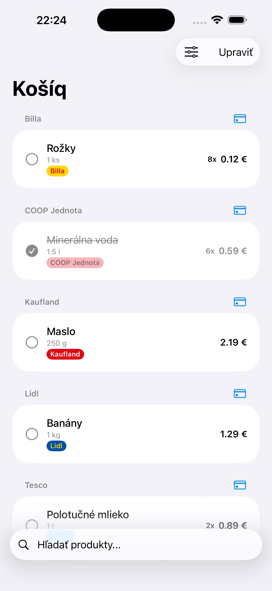
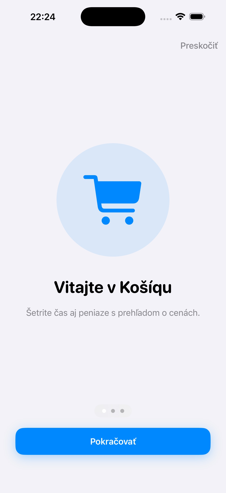

Vyhľadávanie produktov
Hľadajte potraviny a pridávajte výsledky do nákupného zoznamu bez ručného vypisovania každej položky.
Košíq je aplikácia pre vyhľadávanie potravín, tvorbu nákupných zoznamov a návrat k histórii nákupov. Momentálne je však dočasne odstránená z App Store.
Download CTA je zámerne vypnuté, aby stránka neposielala návštevníkov na neaktuálny odkaz.


Funkcie
Obsah stránky ostáva pripravený pre návrat aplikácie. Komunikácia dostupnosti je však férová a jednoznačná.
Hľadajte potraviny a pridávajte výsledky do nákupného zoznamu bez ručného vypisovania každej položky.
Produktové výsledky pomáhajú lepšie chápať rozdiely medzi obchodmi a cenami.
Ak produkt chýba, vlastná položka udrží plánovanie nákupu v pohybe.
Archivované zoznamy pomáhajú opakovať bežné nákupy bez skladania rovnakého plánu od nuly.
Aplikácia je navrhnutá tak, aby vás rýchlo dostala k prvému nákupnému zoznamu.
Košíq je dočasne mimo App Store. Tlačidlá na stiahnutie sú vypnuté až do návratu aplikácie.
Obrazovky
Ukážky ostávajú dostupné aj počas pauzy, aby bolo jasné, čo aplikácia rieši.


Súkromie
Košíq môže spracúvať údaje potrebné na fungovanie aplikácie: obsah nákupných zoznamov, archivované zoznamy, históriu nákupov a technické údaje potrebné na načítanie produktových dát.
Údaje slúžia na ukladanie zoznamov, zobrazovanie histórie a poskytovanie produktových výsledkov. Košíq nepredáva osobné údaje používateľov tretím stranám.
Aplikácia môže používať online služby ako Firebase Authentication a Cloud Firestore na anonymné prihlásenie a doručenie produktových dát. Pri otázkach kontaktujte lukas.bakuliak@gmail.com.
Keď bude aplikácia opäť dostupná v App Store, stránka môže znovu aktivovať download CTA.